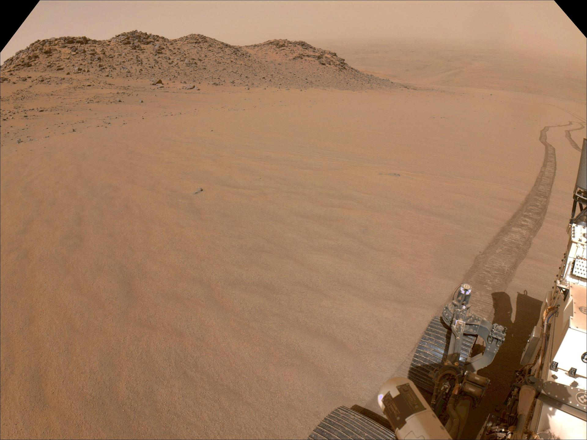
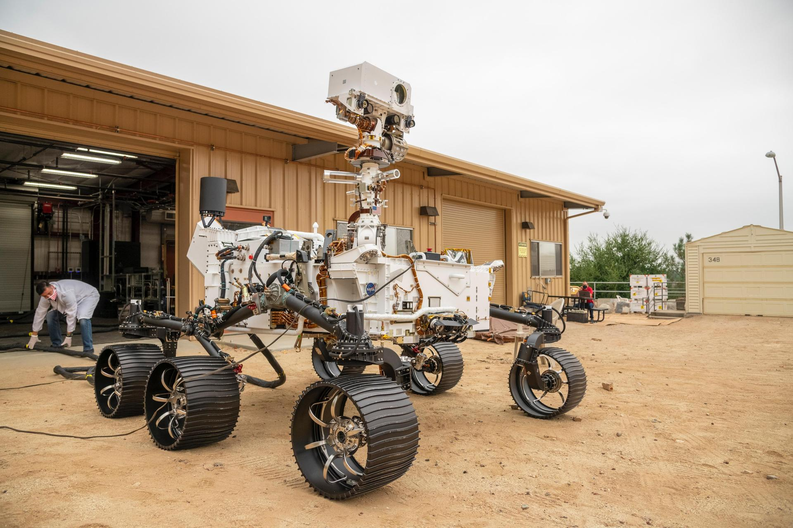

Executive Summary
Since it set down in Jezero Crater, the Perseverance rover has driven across sand dunes, rocky patches and flat bedrock without much choice in the matter. Over roughly 500 sols and 45 km of that driving, how badly its wheels spun in place was computed aboard the vehicle and written to the record. A paper released on September 21 by the Jet Propulsion Laboratory and two universities put that record into the slot a human annotator would normally fill. This article looks at how an answer key gets built for ground no person has ever walked on.
Asked to pick out the dangerous pixels from photographs alone, the model reached an AUROC of 0.874. That is 0.058 above the strongest method published before it. The margin came from tying the photographs to the chassis tilt, the suspension angles and the vibration, all pulled into one shared space; strip that piece out and the score falls to 0.723. Two caveats travel with the number. The grading key itself was derived from the same slip measurements, and the Earth demonstration carries no figures at all.
Sections 1 through 4 follow what the paper says. Section 5 asks whether the traces a factory leaves behind every day could serve as the answer key for its next model, and that question is this article's. The paper never mentions factories or logistics.
Key figures
Source: Chiu et al., Learning to Drive on Mars, arXiv:2609.24952 (2026-09-21). Tables I and II, and section 3.
0.874
AUROC for spotting hazardous terrain
The strongest published method reached 0.816. On F1 it is 0.758 against 0.602
45 km
Real driving distance behind the training set
Accumulated over about 500 sols, with 43,000 grayscale images attached to it
0.874 → 0.723
With the tilt and vibration alignment removed
Photographs alone do not account for slip. Of the two training objectives, this one cost the most when dropped
Zero finetuning
Model carried onto an Earth test site as-is
Trained only on Martian imagery, it steered around boulders in a terrestrial rock field. The paper reports no success rate
Ground No One Can Label
Communication between Earth and Mars is slow and expensive. Nobody can sit at a screen turning the wheels one command at a time, so the rover has to look at the ground with its own eyes and choose a path for itself. Perseverance does this with an onboard autonomy system called ENav. From the disparity between what its two navigation cameras see, ENav builds a height map of the terrain, assigns each cell a cost from features such as slope, roughness and time to traverse, and searches for the cheapest route. Most of the distance Perseverance has covered was driven this way.
The trouble is that elevation does not tell the whole story. On a stretch of sand ripples that looks flat and free of obstacles, the wheels turn and the vehicle covers less than half of what it was told to cover. Terrain that appears geometrically traversable, the paper writes, may produce substantial wheel slip, unexpected vehicle motion, or unfavorable interactions with the rover's mobility system. For a planetary vehicle the stakes are unusual. If it gets stuck, nobody is coming to pull it out.

The obvious fix is to teach a model which ground is actually dangerous, and that is where the labels run out. Manual labeling of terrain according to rover mobility, the paper notes, is impractical. You cannot gather driving footage and parcel it out to annotators the way terrestrial self-driving programs do, and in any case nobody has ever set foot on the terrain in question.
That is not to say Martian imagery has never been labeled. AI4MARS took roughly 35,000 photographs from Spirit, Opportunity and Curiosity and attached 326,000 hand-drawn segmentation labels to them, telling you pixel by pixel whether you are looking at sand, rock or bedrock. This is exactly the line the new paper draws. Those annotations say what the terrain looks like; they do not directly encode how a six-wheeled rover physically interacted with it. The word "sand" and the fact that the wheels spun 30 percent of the way through that sand are two different pieces of information.
Trying to read future slip off a photograph is not a new idea. A 2007 study involving the Jet Propulsion Laboratory already posed the problem of learning and predicting slip from rover imagery, and in 2017 a method appeared that used terrain slope as a label and Gaussian processes to forecast locally varying slip. What changed this time is not the idea but the material. The training data is not a course built at a test facility. It is the whole operational record of a mission, some 500 sols of it.
How Much the Wheels Spun Becomes the Answer Key
The value the researchers placed in the answer slot is slip. The arithmetic is plain. One estimate of how far the rover moved comes from counting wheel rotations. Another comes from stitching stereo photographs together and measuring how far the scenery slid past. The first is the distance the vehicle meant to travel; the second is the distance it actually traveled. Slip is the difference between the two divided by the commanded distance, and it lands somewhere between 0 and 1. The paper calls it the unrealized commanded displacement. A value of 0.3 means three tenths of the commanded distance never happened, and the sand dune on Sol 1327 that the model flagged as hazardous sat right about there.
One more value is recorded alongside it. Tilt describes how far the chassis is leaning, folding the roll and the pitch into a single angle. Slip and tilt are both derived aboard the vehicle from inertial measurements and odometry, and both are saved without anyone's judgment entering the loop.
The shape of the data is sparse on the visual side and dense on the proprioceptive side. A grayscale stereo pair is captured only once per meter of driving, because the Martian scene does not change and the navigation software only needs a fresh look when it plans a new path. Pose, acceleration and the four suspension angles, meanwhile, come in about eight times a second. What accumulated this way is roughly 500 sols, 45 km and 43,000 images. Not 500 consecutive days but 500 scattered across the mission: the held-out sols the paper illustrates run from sand ripples on Sol 340 to flat bedrock on Sol 1762. None of this driving was a course laid out for an experiment. It is the operational record of human Rover Planner decisions executed together with ENav's onboard autonomy.
To put it precisely, this data is not unlabeled. What changed is who does the labeling: the vehicle rather than a person. A human looks at ground and marks it as risky-looking, while the rover drives over that ground and leaves behind a number for how much it slipped. And the number is not applied afterward. It already exists at the moment of the drive.
The Record Is Not Yet a Lesson
Perseverance rarely slipped badly. Most of the driving record is ground it crossed safely, with the dangerous stretches sitting out in a thin tail. Fit a regression to predict the slip value directly on a distribution like that and the abundant low-slip samples dominate the loss. Average error goes down while the ordering among the high-slip cases, the ones that matter, is not preserved — which is exactly what the paper points out.
3.1Restating It as a Question of Order
So the problem was posed differently. Instead of guessing how much slip a patch of ground will produce, the model has to guess which patch is more slippery than which. Training starts by projecting the tracks the wheels left back onto the photograph taken before the drive. The visual features at those spots get arranged in the order of their actual slip magnitudes, and the boulders and sand ripples that the Rover Planners or the onboard geometric planner steered clear of in the first place are pushed to the other side. Order is learned among the places that were driven, and distance is opened up against the places that were not. Because the signal from a wheel track is so thin, a segmentation model was used to widen each track into a surrounding region of the same character.
3.2Where Pictures Alone Fall Short
The team's second observation is that order on its own is not enough. Two patches of sand can look identical and still behave differently depending on how far the vehicle is leaning or how far the suspension is compressed. So tilt, slip, suspension angles and the vibration content of the accelerometer readings were compressed into a 64-dimensional vector and aligned in a shared space with the features drawn from the photographs. Each one-meter segment has a single such vector while the pixels belonging to that segment are many, so the training runs in both directions: pixels find the segment they belong to, and segments find the pixels that are theirs.
The last stage turns all of it into one hazard score. For every pixel the model emits not one predicted slip but three: a low value, a middle value and a high value. The final layer that produces them was fitted separately, on sols the earlier stage never saw. The score is then whichever is larger, the middle value or the spread between the outer two. Terrain expected to slip is expensive, and terrain the model cannot make up its mind about is expensive too. The choice is to never send uncertain ground out labeled as safe.
The paper also looks at the shape the learned space ended up with. Flattening the wheel-track pixels of the held-out sols into two dimensions and coloring them by measured slip produced no split into a safe cluster and a hazardous one. The color instead varied continuously along one dominant direction, which makes it a scale of degree rather than a classification boundary. Under a different projection, one that preserves local neighborhoods, the heavily slipping samples did not gather on a single island but scattered into several groups, while the low-slip side held together as one body. Slippery ground comes in more than one appearance, the paper reads it, and benign ground comes in more or less one.
Spotting Hazards Better Than Three Off-Road Methods
Evaluation ran on 35 sols of driving held out of training. Pixels were split into safe and unsafe using a threshold over the 90th percentile of the slip measures together with the depth of protruding rocks, and how cleanly the model separates the two was measured as a mean over five training runs. The comparisons are three self-supervised methods from terrestrial off-road driving.
The closest follower is the approach from Castro et al., which learns a cost map from vibration signals under self-supervision. It suits the task in spirit, since it handles a continuous target the way slip is continuous, but it predicts that value by direct regression and the skewed distribution catches it by the ankle. The new method came out on top on four measures: AUROC, average precision, recall and F1.
The entry in the table that draws the eye is V-STRONG's precision of 0.958, the highest of the four, sitting next to a recall of 0.118. This method uses a harsh contrastive scheme that marks every pixel the wheels did not touch as untraversable. Almost everything it calls dangerous is dangerous, and it finds about one in ten of the actual hazards. A model that paints most of the map red and then boasts about precision gives a path planner nothing to work with. Pick a method by precision alone and this is the kind you end up with.
STERLING, at the bottom of the same table, fails somewhere else entirely. It learns terrain representations by associating visual and proprioceptive observations, and the objective is satisfied once the two agree with each other. Nothing in it requires heavily slipping terrain to be pulled away from lightly slipping terrain, or arranged along a single direction. Ground with very different slip can therefore stay close together in the feature space. The paper adds that a property of its own data amplifies this. Supervision arrives once per one-meter segment, and a single chassis-level response is assigned to many pixels along the projected wheel track. When the target is that sparse, an objective that only checks agreement will not pick up differences in slip magnitude.
Which of the two training objectives contributed more was checked separately. Remove the part that aligns photographs with the proprioceptive signals and AUROC drops from 0.874 to 0.723, while the rank correlation, which asks how well the predicted ordering matches the measured slip ordering, falls from 0.721 to 0.316. Remove the ranking objective instead and the score is 0.778. The proprioceptive side is the steeper fall. Slip is not predictable from visual features alone, the team concludes, and requires other information such as the vehicle's tilt and suspension angles.
4.1What Earth Confirmed, and What It Did Not
The last test used a physical rover. An Earth testbed matched to Perseverance in weight and mobility base, carrying cameras of similar properties, was loaded with a development build of the Mars 2020 flight software, and the hazard map the trained model produced was laid as an extra layer beside the existing height map. Hazard values projected onto the terrain through a camera model are averaged per cell and added to the existing cost. The search algorithm that finds the path was left untouched. This augments rather than replaces. The model, trained only on Martian imagery, went on with no finetuning, and the rover drove around the large rocks set out on the site.

The layer comes with several handles on it. Cells the rover has not yet seen are initialized with a default hazard value, so unknown ground does not start out safe. The learned hazard only begins to influence cost after it crosses a set threshold, and only the amount above that threshold is multiplied by a weight. Attempt to enter a cell beyond the maximum allowed hazard rating and a new fault condition, added by this work, fires. What has to be decided up front before a learned signal can enter flight software already in operation is written into these settings.
It is more accurate to write down what was not confirmed as well. The Earth demonstration ran primarily on flat ground with rocks as obstacles, and what the paper shows is still frames of the drive and the hazard map, not a success rate or a comparison. Model inference ran on an external GPU server rather than a computer aboard the vehicle, the two joined over a network socket. The flight software carried on board is a ground development environment whose hardware interfaces are stubbed rather than real. None of this is yet a capability in use on Mars. The grading key used in evaluation was likewise not assigned by hand but derived from the same slip values, so the score is a measure of predicting slip well, not of safe driving as such. The dataset and code are stated in the paper as forthcoming and are not yet public.
Why Pebblous Is Watching This Paper
From this section on, none of it is in the paper. The paper covers Martian driving and says nothing about factory floors or logistics yards. Even so, the shape of the problem it solves will be familiar to anyone who has worked in a domain where data is scarce. A model has to be raised where no answer key exists, and the option of sending people out to label things is blocked for physical reasons rather than budgetary ones. Mars only shows that condition at its most extreme.
The route the team took was not to manufacture new labels but to promote a signal that was already accumulating. Slip is not a quantity someone began measuring for this paper. The rover has computed it from the start in order to know where it is, and until now it passed into the operational record after each drive and went to sleep there. The moment it was paired with photographs, it became an answer key.
Not every record left behind can make that move, though. Reading the paper, three conditions stand out.
- The outcome has to be recorded on one consistent scale without passing through human hands. Slip and tilt are computed automatically aboard the vehicle eight times a second. Had it been a logbook filled in by whoever was on shift, the criteria would drift from person to person and no ordering could be learned from it.
- That outcome has to be attachable back onto the scene that caused it. The central piece of engineering in this work is projecting the wheel tracks onto the photograph taken before the drive. If the outcome value and the observation of the moment are not joined by time and position, they are simply two sets of logs living apart.
- Rare bad cases must not be swallowed by the average. High-slip stretches are a fraction of the total and they are the fraction that matters. That is why the problem was recast as ranking and quantiles. And bad cases do not arrive wearing one face, as the shape of the feature space seen earlier shows.
Hold those conditions up against a factory or a distribution center and your own position comes roughly into view. The number of times a robot dropped an item and picked it up again, the record of a forklift slowing at the same corner over and over, the few seconds of vibration before a machine halts, the samples an inspection rig declined to rule on. All of it is generated daily without anyone asking for it, and most of it sits in equipment logs until the retention period expires and it is deleted. The rover on Mars promoted such a value to an answer key. Most sites on the ground use it only for incident investigation.
We have covered the manufacture-new-data side of this a few times before. There was the study that gathered navigation data by mounting a smartphone on a four-wheeled walker instead of a robot, and the direction that uses a world model to transplant robot trajectories into new environments and multiply the volume. This work has a different grain. Nothing was newly collected and nothing was synthesized. An operational record that had already piled up during the mission was simply read again. That is why, when we talk about AI-Ready Data, we ask about the structure of the record before the collection plan. When what was measured, and when, and under what conditions, stays attached to the observation, the data gets used a second time after its original purpose has ended.
So the question left over is not an invitation to buy new equipment. Put the four below to your own site and roughly which square you are standing in becomes visible. This is not a list the paper offers. It is what this article carried over into our own work.
- When our equipment fails or hesitates, does that moment survive as a value? If it does, how long is it kept?
- Can that value be joined to the image or sensor reading of the same instant? If the two live in different systems, how many days does the joining take?
- When a human-applied label and a machine-recorded value disagree, have we decided in advance which one to believe?
- How are the rare bad cases handled during training? If average error is all anyone is watching, those cases have already been erased.
Thank you for reading this far. Every figure and definition this article cites can be checked by anyone in the full text of arXiv:2609.24952. We are curious where the failure records your own equipment leaves are piling up right now. If you once tried to train on them and gave up because the timestamps would not line up, we would like to hear about it.
References
Primary source
- 1.Chiu, D., Wilson, C., Tumbar, A., Sukhatme, G. S., & Myint, S. (2026). "Learning to Drive on Mars: Visual Multimodal Traversability Estimation for Off-World Navigation." arXiv:2609.24952 [cs.RO]. Every figure, definition and figure number in this article comes from this paper.
Methods compared against
- 2.Castro, M. G., Triest, S., Wang, W., Gregory, J. M., Sanchez, F., Rogers III, J. G., & Scherer, S. (2023). "How Does It Feel? Self-Supervised Costmap Learning for Off-Road Vehicle Traversability." ICRA 2023. The strongest comparison in Table II.
- 3.Jung, S., Lee, J., Meng, X., Boots, B., & Lambert, A. (2024). "V-STRONG: Visual Self-Supervised Traversability Learning for Off-road Navigation." ICRA 2024. High precision, low recall.
- 4.Karnan, H., Yang, E., Farkash, D., Warnell, G., Biswas, J., & Stone, P. (2023). "STERLING: Self-Supervised Terrain Representation Learning from Unconstrained Robot Experience." CoRL 2023.
Background
- 5.Swan, R. M., Atha, D., Leopold, H. A., Gildner, M., Oij, S., Chiu, C., & Ono, M. (2021). "AI4MARS: A Dataset for Terrain-Aware Autonomous Driving on Mars." CVPRW 2021. The dataset of hand-drawn Martian terrain labels.
- 6.Toupet, O., Ono, M., Del Sesto, T., Maimone, M., & McHenry, M. (2026). "Enhanced Autonomous Navigation on the Perseverance Mars Rover." IEEE Transactions on Field Robotics, 3, 83–124. ENav, the existing autonomy stack this work layered a hazard map onto.
- 7.Oquab, M., et al. (2023). "DINOv2: Learning Robust Visual Features without Supervision." The pretrained encoder used to extract visual features.
- 8.Angelova, A., Matthies, L., Helmick, D., & Perona, P. (2007). "Learning and Prediction of Slip from Visual Information." Journal of Field Robotics, 24(3), 205–231. An early study predicting slip from visual information.
- 9.Cunningham, C., Ono, M., Nesnas, I., Yen, J., & Whittaker, W. L. (2017). "Locally-Adaptive Slip Prediction for Planetary Rovers Using Gaussian Processes." ICRA 2017, 5487–5494. The prior method that predicted locally varying slip from terrain slope labels.